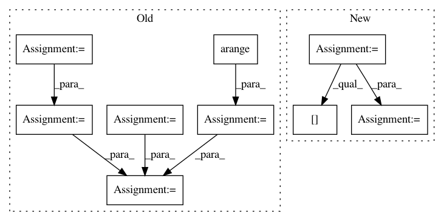

e8a8edec508fcf886d5c6329ff0729b1cff845e8,hicexplorer/utilities.py,,expected_interactions_norm,#Any#Any#Any#,239
Before Change
for i, distance_ in enumerate(distance):
expected_interactions[distance_] += pSubmatrix.data[i]
count_times_i = np.arange(float(len(expected_interactions)))
pChromosome_count = np.int(pChromosome_count)
pLength_chromosome = np.int(pLength_chromosome)
count_times_i *= pChromosome_count
count_times_i -= pLength_chromosome
count_times_i *= np.int(-1)
count_times_i *= np.sqrt(count_times_i)
expected_interactions /= count_times_i
log.debug("exp_obs_matrix_lieberman {}".format(expected_interactions))
After Change
row, col = pSubmatrix.nonzero()
distance = np.absolute(row - col)
occurences = np.zeros(pSubmatrix.shape[0])
for i, distance_ in enumerate(distance):
expected_interactions[distance_] += pSubmatrix.data[i]
occurences[distance_] += 1
expected_interactions /= occurences
return expected_interactions
def exp_obs_matrix_lieberman(pSubmatrix, pLength_chromosome, pChromosome_count):
In pattern: SUPERPATTERN
Frequency: 3
Non-data size: 9
Instances
Project Name: deeptools/HiCExplorer
Commit Name: e8a8edec508fcf886d5c6329ff0729b1cff845e8
Time: 2018-09-04
Author: wolffj@informatik.uni-freiburg.de
File Name: hicexplorer/utilities.py
Class Name:
Method Name: expected_interactions_norm
Project Name: rusty1s/pytorch_geometric
Commit Name: 534a10d60d3c5a356c8121f9b3c53f49cf873f96
Time: 2019-12-06
Author: matthias.fey@tu-dortmund.de
File Name: torch_geometric/transforms/gdc.py
Class Name: GDC
Method Name: diffusion_matrix_approx
Project Name: dask/dask-image
Commit Name: f9aea094643fb3240193b0bc0f1908d5b84d82ab
Time: 2018-09-30
Author: jakirkham@gmail.com
File Name: dask_image/ndmeasure/__init__.py
Class Name:
Method Name: center_of_mass